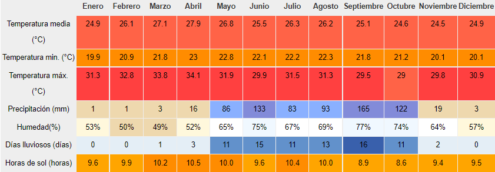

Más sobre Cuscatlan...

Cuscatlan
Cuscatlán es uno de los catorce departamentos que conforman la República de El Salvador.
Más info...
Municipios
- Cojutepeque
- Candelaria
- El Carmen
- El Rosario
- Monte San Juan
- Oratorio de Concepción
- San Bartolomé Perulapía
- San Cristobal
- San José Guayabal
- San Pedro Perulapán
- San Rafael Cedros
- San Ramón
- Santa Cruz Analquito
- Santa Cruz Michapa
- Suchitoto
- Tenancingo

Datos Históricos
· Cuzcatlán, era desde la antigüedad la ciudad célebre por sus riquezas y el poderío de sus príncipes, la misma fue considerada la principal metrópoli de los aborígenes pipiles de El Salvador Precolombino. Fundada en 1504 por el monarca Topiltzín Acxitl y librada de muchas guerras por el valiente nativo Atlacatl, quien reinó en el lugar antes de la época colonial.
Ver más...· En 1770, su población apenas la formaban 19 familias indígenas y 115 ladinos. Los siglos han transcurrido y sucesos importantes han marcado la historia de la ciudad. Cuscatlán constó con los distritos o partidos de Cojutepeque y Suchitoto, creados respectivamente en 1786. El departamento fue constituido durante la administración del jefe de Estado Nicolás Espinoza, por Decreto Ejecutivo el 22 de mayo de 1835.
· Originalmente Suchitoto fue su cabecera, pero a partir del 12 de noviembre de 1861 es la ciudad de Cojutepeque.

Hidrografía
Ríos
- Colima
- El Coyolito
- Tomeadero Chanucho
- Chacalingo

Personajes
- Anita Alvarado
- Raúl Contreras
- Filadelfo Cruz
- Julia Díaz
- Alonso Alegría
- Hernán Cubias

Otros datos interesantes...
Toponimia
· Es de origen náhua, Kuskat, "collar,piedra preciosa, tesoro" y Tan "locativo". Etimológicamente significaría: "lugar de cosas preciosas". Su topónimo es: Kuskatan.
Ver más...Economía
· Su economía se fundamenta básicamente en la agricultura que se especifica en el cultivo de la caña de azúcar. Así mismo, en menor proporción el tabaco, que es de excelente calidad. La manufactura de artesanías es otro de los pilares fundamentales de la economía de este departamento. Son expertos en la fabricación de; sombreros, cestas de todo tipo y esteras, concretamente en el municipio de Tenancingo.
Religión
· El catolicismo representa el 60% de la población y el protestantismo representa el 30%. El 7% de la población no profesa ninguna religión y el 3% pertenece a otras religiones.
Clima
En El Salvador existen dos estaciones y dos transiciones durante el año: la estación seca (14 de noviembre al 19 de abril) y la estación lluviosa (21 de mayo al 16 de octubre); y las transiciones seca-lluviosa (20 de abril al 20 de mayo) y lluviosa-seca (17 de octubre al 13 de noviembre).
Departamento de Cuscatlán tiene un clima tropical. En invierno, hay mucha menos lluvia que en verano. Este clima es considerado Aw según la clasificación climática de Köppen-Geiger.
| Parámetros climáticos promedios Cuscatlan | |||||||||||||
|---|---|---|---|---|---|---|---|---|---|---|---|---|---|
|  | |||||||||||||